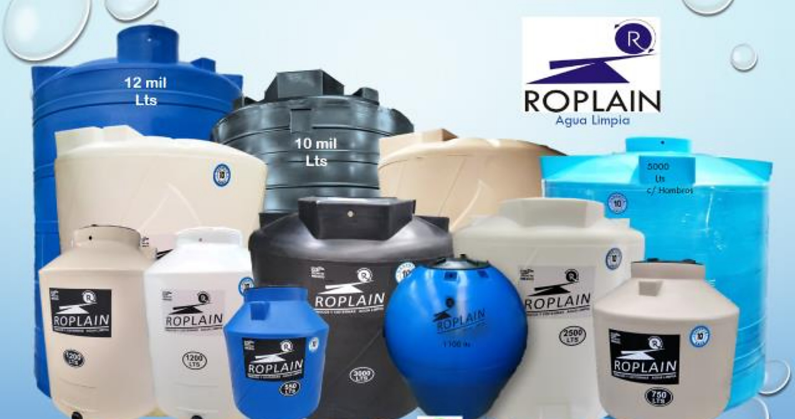
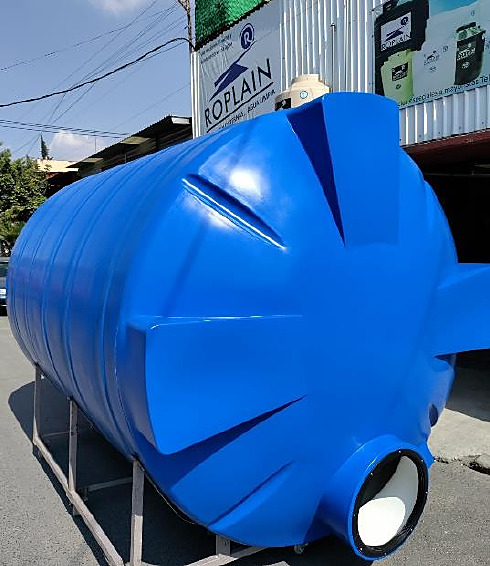

Natural, unicapa
Una sola capa, en acabado translúcido o natural. Disponible en tinacos y cisternas del catálogo.
Fábrica de rotomoldeo · Iztapalapa, CDMX
ROPLAIN fabrica tinacos y cisternas de polietileno, de 550 a 12,000 litros, en acabado natural, bicapa o tricapa. La tecnología de sus materiales, en palabras del catálogo, inhibe la reproducción de bacterias y ofrece cero fugas.

Catálogo
Filtra por tipo o por capacidad y abre la ficha de cada modelo. Medidas, pesos, colores y fotos tomados del catálogo de la planta.
No hay modelos con esa combinación. Prueba otro filtro o .
Guía de capacidad
Esta es una guía de referencia para el hogar, no una tabla oficial de ROPLAIN. Usamos 150 litros por persona al día —un consumo doméstico habitual en México— multiplicados por los días de reserva que quieras tener ante un corte o tandeo. Luego te mostramos el modelo ROPLAIN cuya capacidad cubre ese volumen.
Si el agua llega a diario, 1 o 2 días suelen bastar. Si hay tandeo, prueba con 3 a 5.
Volumen estimado
0 litros
Especificaciones
Medidas, peso y capas tal como aparecen en el catálogo. En las cisternas de 10,000 y 12,000 litros, las dimensiones pueden variar según el proceso de enfriamiento.
| Modelo | Capacidad | Alto | Diámetro / largo | Peso | Capas y colores | Incluye |
|---|
Fabricación
Las piezas se moldean en polietileno —y, en las cisternas grandes, en polietileno industrial o HDPE— en una sola pieza. El catálogo resume así la promesa del material: inhibe la reproducción de bacterias y cero fugas.
Una sola capa, en acabado translúcido o natural. Disponible en tinacos y cisternas del catálogo.
Exterior negro e interior blanco, según las fichas. El negro ayuda a proteger el agua; el blanco facilita ver el interior.
Exterior beige o azul (en algunos modelos también negro), intermedio negro e interior blanco. Es la configuración de tres capas que ROPLAIN describe en sus fichas.
Tinacos clásicos, slim, esfera y horizontal, más cisternas de 2,500 a 12,000 litros, incluida la cisterna con hombros de 5,000.
El propio catálogo invita a solicitar cotización y destaca excelentes precios a mayoristas.
Fabricación y venta en Calle Emilio Campa no. 15, Col. Santa Martha Acatitla Norte, CDMX.

En la planta
Así salen las cisternas grandes de la fábrica, en Calle Emilio Campa, Col. Santa Martha Acatitla Norte. Si quieres ver un modelo o armar un pedido de mayoreo, te esperamos en horario de planta o te cotizamos por WhatsApp.
Cotizar por WhatsAppCalidad
10 años de garantía
El catálogo lo dice con estas palabras: «Todos nuestros productos han sido probados y evaluados en su resistencia y durabilidad, por eso le ofrecemos una garantía de 10 años».
Aplica a problemas de fabricación, sujeta a evaluación, y únicamente al tinaco: no cubre los accesorios. En las fichas del tinaco horizontal de 1,100 litros y del tinaco de 1,200 litros se reitera la «garantía de fabricación 10 años».
Distribuidores
ROPLAIN vende de mayoreo y menudeo. Si eres ferretero, contratista o distribuidor, el catálogo invita a solicitar información o una cotización: «Quedamos a sus órdenes».
Escríbenos por WhatsApp y menciona que te interesa compra de mayoreo. Te armamos la lista de modelos y capacidades.
Cotizar mayoreo por WhatsAppPreguntas frecuentes
Diez años por problemas de fabricación, sujeto a evaluación. Aplica únicamente al tinaco, no a los accesorios, según el catálogo.
Depende del modelo. Los tinacos slim de 800 y 1,100 litros incluyen tapa de rosca, válvula de llenado y flotador no. 4, multiconector, jarro de aire y brida de 1½ pulgadas. El tinaco horizontal de 1,100 litros y el de 1,200 litros detallan tapa de rosca (18.5" y 19", respectivamente), brida, flotador con válvula, multiconector y jarro de aire. En otros modelos el catálogo solo indica «incluye accesorios» o «incluye tapa», sin desglose.
La mayoría se ofrece en natural (unicapa), bicapa (exterior negro, interior blanco) y tricapa (exterior beige o azul —a veces también negro—, intermedio negro e interior blanco). El tinaco horizontal de 1,100 litros se presenta en el catálogo solo en tres capas, con exterior beige, azul o negro.
El índice de este catálogo vuelve a mencionar cisternas de 1,200 litros, pero no hay una ficha con medidas ni foto de ese modelo. Lo que sí está documentado es el tinaco de 1,200 litros (143 cm de alto, 110 cm de diámetro). Si te interesa una cisterna de esa capacidad, conviene confirmarla al cotizar.
En las cisternas de 10,000 y 12,000 litros el catálogo advierte que las dimensiones pueden variar de acuerdo al proceso de enfriamiento. La de 10,000 litros mide 273 cm de alto por 224 cm de diámetro, con pared de 8 a 10 mm; la de 12,000, 323 cm de alto por 224 cm de diámetro, con pared de 10 a 12 mm.
En este catálogo solo aparecen tinacos y cisternas. No hay biodigestores, tolvas ni agrotanques en las 17 páginas de este catálogo.
Planta